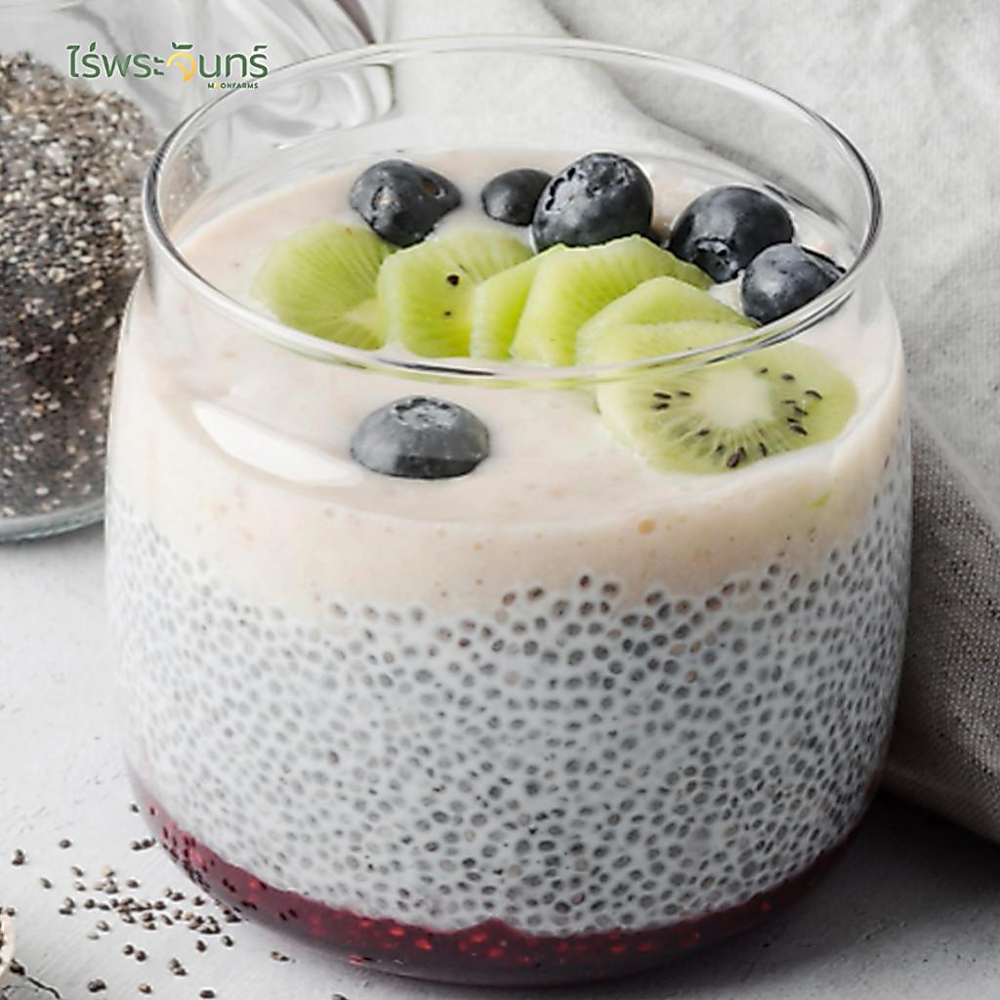

ส่วนประกอบ
เมล็ดเจีย 100%
100% Natural

ไม่ใส่
✕แป้ง
✕น้ำตาล
✕วัตถุกันเสีย
✕แต่งสี
✕แต่งกลิ่น
WHITE & BLACK
CHIA SEEDS
CHIA SEEDS

เมล็ดเจียขาว · เมล็ดเจียดำ
น้ำหนักสุทธิ 400 กรัม · ทานได้ 80 ครั้ง
มาตรฐานรับรอง
อย. 66-2-01162-6-0056
ฮาลาล
✓GHP · HACCP
✓MiT · Made in Thailand
✓ตรวจแล็บ ไม่พบ E. coli
วิธีทาน
ช้อน
+ น้ำเปล่า รอให้พองตัว

เมล็ดเจียขาว · ดำ100% Natural · มี อย. · ฮาลาล
LINE @moonfarms